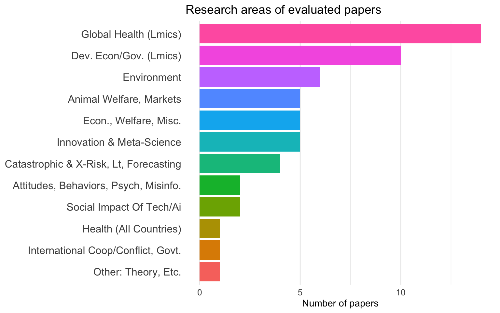
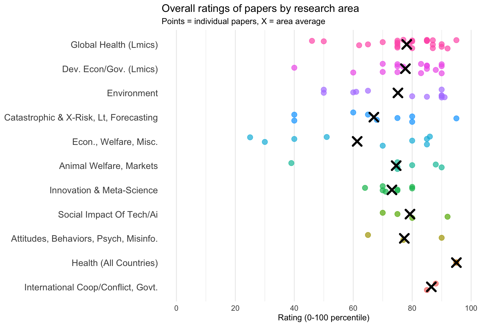
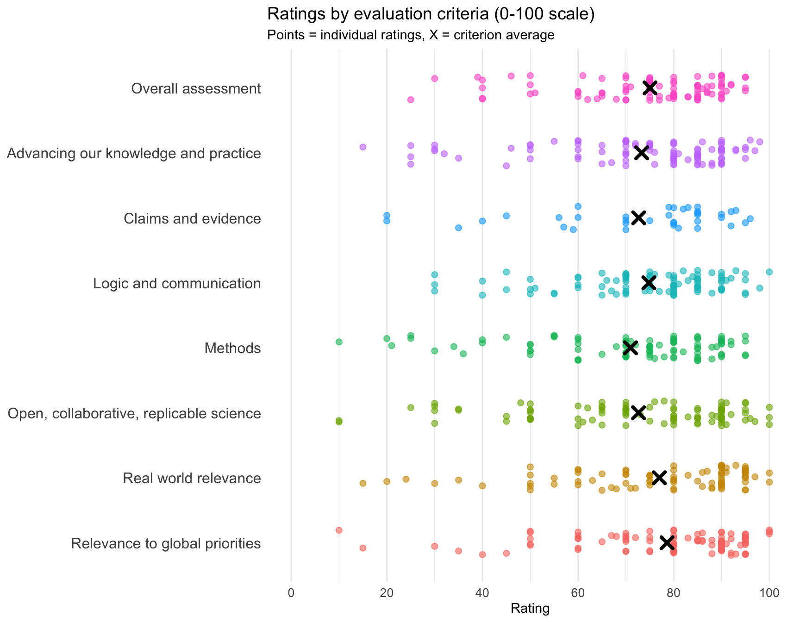
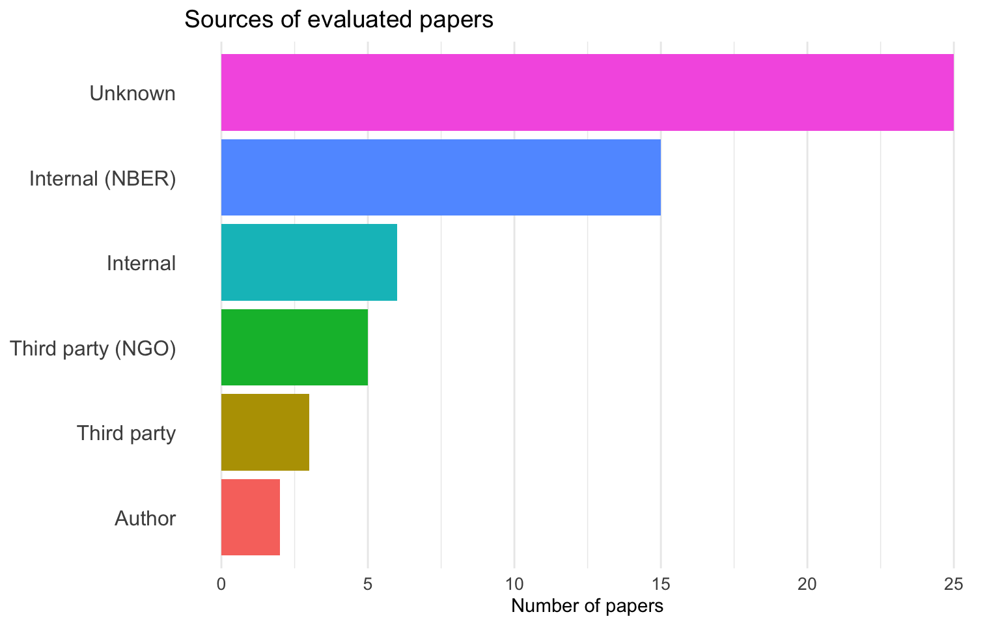

Note
This page provides a static snapshot of Unjournal evaluation data while we update the interactive dashboard. Visit the main dashboard for the interactive version.
Summary Statistics
- 102 evaluations of 56 papers across 12 research areas
Research Areas
Research Areas Table
| Area | Papers |
|---|---|
| Global Health (Lmics) | 14 |
| Dev. Econ/Gov. (Lmics) | 10 |
| Environment | 6 |
| Animal Welfare, Markets | 5 |
| Econ., Welfare, Misc. | 5 |
| Innovation & Meta-Science | 5 |
| Catastrophic & X-Risk, Lt, Forecasting | 4 |
| Attitudes, Behaviors, Psych, Misinfo. | 2 |
| Social Impact Of Tech/Ai | 2 |
| Health (All Countries) | 1 |
| International Coop/Conflict, Govt. | 1 |
| Other: Theory, Etc. | 1 |
Overall Ratings by Research Area
Warning: Removed 1 rows containing missing values (`geom_point()`).
Overall Ratings Table
| Paper | Area | Rating | Lower CI | Upper CI |
|---|---|---|---|---|
| Adjusting for Scale-Use Heterogeneity in Self-Reported Well-Being | Health (All Countries) | 95 | 90 | 100 |
| Adjusting for Scale-Use Heterogeneity in Self-Reported Well-Being | Health (All Countries) | 95 | 80 | 100 |
| Selecting the Most Effective Nudge: Evidence from a Large-Scale Experiment on Immunization | Global Health (Lmics) | 95 | 80 | 99 |
| Existential risk and growth | Catastrophic & X-Risk, Lt, Forecasting | 95 | 80 | 99 |
| The Long-Run Effects of Psychotherapy on Depression, Beliefs, and Economic Outcomes | Global Health (Lmics) | 92 | 81 | 100 |
| Artificial Intelligence and Economic Growth | Social Impact Of Tech/Ai | 92 | 80 | 100 |
| A Welfare Analysis of Policies | ||||
| Impacting Climate Change | Environment | 91 | 78 | 94 |
| Does online fundraising increase charitable giving? A nationwide field experiment on Facebook | Attitudes, Behaviors, Psych, Misinfo. | 90 | 85 | 95 |
| A Welfare Analysis of Policies | ||||
| Impacting Climate Change | Environment | 90 | 85 | 94 |
| Urban Forests: Environmental Health Values and Risks | Environment | 90 | 86 | 94 |
| The Macroeconomic Impact of Climate Change: Global vs. Local Temperature | Environment | 90 | 80 | 100 |
| Building Resilient Education Systems: Evidence from Large-Scale Randomized Trials in Five Countries | Dev. Econ/Gov. (Lmics) | 90 | 85 | 95 |
| Intergenerational Child Mortality Impacts of Deworming: Experimental Evidence from Two Decades of the Kenya Life Panel Survey | Global Health (Lmics) | 90 | 80 | 100 |
| Willful Ignorance and Moral Behavior | Animal Welfare, Markets | 90 | 75 | 96 |
| Money (Not) to Burn: Payments for Ecosystem Services to Reduce Crop Residue Burning | Dev. Econ/Gov. (Lmics) | 90 | 75 | 95 |
| Legalizing Entrepreneurship | Dev. Econ/Gov. (Lmics) | 90 | 85 | 97 |
| Does the Squeaky Wheel Get More Grease? The Direct and Indirect Effects of Citizen Participation on Environmental Governance in China | Environment | 90 | 85 | 95 |
| The Comparative Impact of Cash Transfers and a Psychotherapy Program on Psychological and Economic Well-being | Global Health (Lmics) | 90 | NA | NA |
| Misperceptions and Demand for Democracy under Authoritarianism | International Coop/Conflict, Govt. | 88 | 80 | 95 |
| Willful Ignorance and Moral Behavior | Animal Welfare, Markets | 88 | 83 | 93 |
| The Environmental Effects of Economic Production: Evidence from Ecological Observations | Dev. Econ/Gov. (Lmics) | 88 | NA | NA |
| The wellbeing cost-effectiveness of StrongMinds and Friendship Bench: Combining a systematic review and meta-analysis with charity-related data | Global Health (Lmics) | 87 | 84 | 90 |
| Intergenerational Child Mortality Impacts of Deworming: Experimental Evidence from Two Decades of the Kenya Life Panel Survey | Global Health (Lmics) | 87 | 77 | 97 |
| Intergenerational Child Mortality Impacts of Deworming: Experimental Evidence from Two Decades of the Kenya Life Panel Survey | Global Health (Lmics) | 87 | 77 | 97 |
| When do “Nudges” Increase Welfare? | Econ., Welfare, Misc. | 86 | 76 | 96 |
| Asymmetry in Civic Information: An Experiment on Tax Participation among Informal Firms in Togo | Dev. Econ/Gov. (Lmics) | 85 | 75 | 95 |
| Misperceptions and Demand for Democracy under Authoritarianism | International Coop/Conflict, Govt. | 85 | 70 | 95 |
| The wellbeing cost-effectiveness of StrongMinds and Friendship Bench: Combining a systematic review and meta-analysis with charity-related data | Global Health (Lmics) | 85 | 75 | 95 |
| How Effective Is (More) Money? Randomizing Unconditional Cash Transfer Amounts in the US | Econ., Welfare, Misc. | 85 | 80 | 90 |
| The Macroeconomic Impact of Climate Change: Global vs. Local Temperature | Environment | 85 | 80 | 90 |
| Selecting the Most Effective Nudge: Evidence from a Large-Scale Experiment on Immunization | Global Health (Lmics) | 85 | 75 | 90 |
| Water Treatment and Child Mortality: A Meta-analysis and Cost-effectiveness Analysis | Global Health (Lmics) | 85 | 75 | 95 |
| Money (Not) to Burn: Payments for Ecosystem Services to Reduce Crop Residue Burning | Dev. Econ/Gov. (Lmics) | 85 | 80 | 90 |
| Universal Basic Income: Short-Term Results from a Long-Term Experiment in Kenya | Dev. Econ/Gov. (Lmics) | 85 | 65 | 95 |
| When do “Nudges” Increase Welfare? | Econ., Welfare, Misc. | 85 | 70 | 95 |
| When Celebrities Speak: A Nationwide Twitter Experiment Promoting Vaccination In Indonesia | Global Health (Lmics) | 85 | NA | NA |
| Building Resilient Education Systems: Evidence from Large-Scale Randomized Trials in Five Countries | Dev. Econ/Gov. (Lmics) | 83 | 73 | 93 |
| Universal Basic Income: Short-Term Results from a Long-Term Experiment in Kenya | Dev. Econ/Gov. (Lmics) | 83 | 93 | 100 |
| Adaptability and the Pivot Penalty in Science | Innovation & Meta-Science | 80 | 70 | 90 |
| How Effective Is (More) Money? Randomizing Unconditional Cash Transfer Amounts in the US | Econ., Welfare, Misc. | 80 | 65 | 95 |
| The animal welfare cost of meat: evidence from a survey of hypothetical scenarios among Belgian consumers | Animal Welfare, Markets | 80 | 70 | 90 |
| The Returns to Science In the Presence of Technological Risks | Innovation & Meta-Science | 80 | 60 | 88 |
| Economic vs. Epidemiological Approaches to Measuring the Human Capital Impacts of Infectious Disease Elimination | Global Health (Lmics) | 80 | 65 | 90 |
| Forecasting Existential Risks: Evidence From a Long-Run Forecasting Tournament | Catastrophic & X-Risk, Lt, Forecasting | 80 | NA | NA |
| Long term cost-effectiveness of resilient foods for global catastrophes compared to artificial general intelligence safety | Catastrophic & X-Risk, Lt, Forecasting | 80 | 60 | 90 |
| Advance Market Commitments: Insights from Theory and Experience | Global Health (Lmics) | 80 | 70 | 90 |
| Does the Squeaky Wheel Get More Grease? The Direct and Indirect Effects of Citizen Participation on Environmental Governance in China | Environment | 80 | 71 | 86 |
| Advance Market Commitments: Insights from Theory and Experience | Global Health (Lmics) | 80 | NA | NA |
| Artificial Intelligence and Economic Growth | Social Impact Of Tech/Ai | 80 | 70 | 90 |
| Advance Market Commitments: Insights from Theory and Experience | Global Health (Lmics) | 79 | 59 | 94 |
| Social Safety Nets, Women’s Economic | ||||
| Achievements and Agency | Dev. Econ/Gov. (Lmics) | 77 | 71 | 80 |
| Population ethical intuitions. | Attitudes, Behaviors, Psych, Misinfo. | 77 | 56 | 94 |
| The Long-Run Effects of Psychotherapy on Depression, Beliefs, and Economic Outcomes | Global Health (Lmics) | 77 | 70 | 84 |
| Irrigation Strengthens Climate Resilience: Long-term Evidence from Mali using Satellites and Surveys | Global Health (Lmics) | 75 | 69 | 85 |
| Asymmetry in Civic Information: An Experiment on Tax Participation among Informal Firms in Togo | Dev. Econ/Gov. (Lmics) | 75 | NA | NA |
| Meaningfully reducing consumption of meat and animal products is an unsolved problem: A meta-analysis | Animal Welfare, Markets | 75 | 60 | 80 |
| The Effect of Public Science on Corporate R&D | Innovation & Meta-Science | 75 | 75 | 87 |
| Choose Your Moments: [NIH] Peer Review and Scientific Risk Taking | Innovation & Meta-Science | 75 | 60 | 80 |
| Towards best practices in AGI safety and governance | Social Impact Of Tech/Ai | 75 | 65 | 85 |
| How Much Would Reducing Lead Exposure Improve Children’s Learning in the Developing World? | Global Health (Lmics) | 75 | 68 | 82 |
| Forecasting Existential Risks: Evidence From a Long-Run Forecasting Tournament | Catastrophic & X-Risk, Lt, Forecasting | 75 | 60 | 90 |
| Cognitive Behavioral Therapy among Ghana’s Rural Poor Is Effective Regardless of Baseline Mental Distress | Global Health (Lmics) | 75 | 70 | 84 |
| The Benefits and Costs of Guest Worker Programs: Experimental Evidence From the India-UAE Migration Corridor | Dev. Econ/Gov. (Lmics) | 75 | 60 | 90 |
| The Benefits and Costs of Guest Worker Programs: Experimental Evidence From the India-UAE Migration Corridor | Dev. Econ/Gov. (Lmics) | 75 | 70 | 85 |
| Banning wildlife trade can boost demand for unregulated threatened species | Animal Welfare, Markets | 75 | NA | NA |
| Cognitive Behavioral Therapy among Ghana’s Rural Poor Is Effective Regardless of Baseline Mental Distress | Global Health (Lmics) | 75 | NA | NA |
| Banning wildlife trade can boost demand for unregulated threatened species | Animal Welfare, Markets | 75 | NA | NA |
| The Comparative Impact of Cash Transfers and a Psychotherapy Program on Psychological and Economic Well-being | Global Health (Lmics) | 75 | 65 | 85 |
| The Returns to Science In the Presence of Technological Risks | Innovation & Meta-Science | 71 | 27 | 87 |
| Choose Your Moments: [NIH] Peer Review and Scientific Risk Taking | Innovation & Meta-Science | 70 | 50 | 90 |
| Towards best practices in AGI safety and governance | Social Impact Of Tech/Ai | 70 | 60 | 80 |
| Stagnation and Scientific Incentives | Innovation & Meta-Science | 70 | 55 | 85 |
| How Much Would Reducing Lead Exposure Improve Children’s Learning in the Developing World? | Global Health (Lmics) | 70 | 55 | 74 |
| Does Conservation Work in General Equilibrium? | Econ., Welfare, Misc. | 70 | 60 | 80 |
| Effects of Emigration on Rural Labor Markets | Dev. Econ/Gov. (Lmics) | 70 | 50 | 78 |
| The Environmental Effects of Economic Production: Evidence from Ecological Observations | Dev. Econ/Gov. (Lmics) | 70 | NA | NA |
| Existential risk and growth | Catastrophic & X-Risk, Lt, Forecasting | 68 | 60 | 70 |
| Population ethical intuitions. | Attitudes, Behaviors, Psych, Misinfo. | 65 | 60 | 80 |
| Biodiversity risk | Environment | 65 | 50 | 80 |
| The Governance Of Non-Profits And Their Social Impact: Evidence From A Randomized Program In Healthcare In DRC | Global Health (Lmics) | 65 | 55 | 74 |
| Long term cost-effectiveness of resilient foods for global catastrophes compared to artificial general intelligence safety | Catastrophic & X-Risk, Lt, Forecasting | 65 | NA | NA |
| The Effect of Public Science on Corporate R&D | Innovation & Meta-Science | 64 | 58 | 70 |
| When Celebrities Speak: A Nationwide Twitter Experiment Promoting Vaccination In Indonesia | Global Health (Lmics) | 62 | NA | NA |
| Biodiversity risk | Environment | 61 | 51 | 72 |
| Urban Forests: Environmental Health Values and Risks | Environment | 60 | 45 | 90 |
| Legalizing Entrepreneurship | Dev. Econ/Gov. (Lmics) | 60 | 50 | 70 |
| Accelerating Vaccine Innovation for Emerging Infectious Diseases via Parallel Discovery | Catastrophic & X-Risk, Lt, Forecasting | 60 | 50 | 70 |
| Pharmaceutical Pricing and R&D as a Global Public Good | Econ., Welfare, Misc. | 51 | 35 | 65 |
| Global potential for natural regeneration in deforested tropical regions | Environment | 50 | 30 | 80 |
| Global potential for natural regeneration in deforested tropical regions | Environment | 50 | 40 | 60 |
| Water Treatment and Child Mortality: A Meta-analysis and Cost-effectiveness Analysis | Global Health (Lmics) | 50 | 40 | 60 |
| Irrigation Strengthens Climate Resilience: Long-term Evidence from Mali using Satellites and Surveys | Global Health (Lmics) | 46 | NA | NA |
| Zero-Sum Thinking, the Evolution of Effort-Suppressing Beliefs, and Economic Development | Dev. Econ/Gov. (Lmics) | 40 | 30 | 50 |
| Accelerating Vaccine Innovation for Emerging Infectious Diseases via Parallel Discovery | Catastrophic & X-Risk, Lt, Forecasting | 40 | 20 | 60 |
| Replicability & Generalisability: A Guide to CEA discounts | Econ., Welfare, Misc. | 40 | 10 | 60 |
| Long term cost-effectiveness of resilient foods for global catastrophes compared to artificial general intelligence safety | Catastrophic & X-Risk, Lt, Forecasting | 40 | 20 | 60 |
| Meaningfully reducing consumption of meat and animal products is an unsolved problem: A meta-analysis | Animal Welfare, Markets | 39 | 14 | 62 |
| Pharmaceutical Pricing and R&D as a Global Public Good | Econ., Welfare, Misc. | 30 | 10 | 50 |
| Replicability & Generalisability: A Guide to CEA discounts | Econ., Welfare, Misc. | 25 | 0 | 50 |
| The animal welfare cost of meat: evidence from a survey of hypothetical scenarios among Belgian consumers | Animal Welfare, Markets | NA | NA | NA |
Ratings by Evaluation Criteria
Warning: Removed 25 rows containing missing values (`geom_point()`).
Criteria Averages Table
| Criteria | Mean | Median | Min | Max | N |
|---|---|---|---|---|---|
| Relevance to global priorities | 78.6 | 85.0 | 10.0 | 100 | 100 |
| Real world relevance | 77.0 | 83.0 | 15.0 | 100 | 100 |
| Overall assessment | 75.0 | 79.0 | 25.0 | 95 | 100 |
| Logic and communication | 74.8 | 79.5 | 30.0 | 100 | 101 |
| Advancing our knowledge and practice | 73.3 | 80.0 | 15.0 | 98 | 100 |
| Claims and evidence | 72.7 | 80.0 | 20.0 | 96 | 38 |
| Open, collaborative, replicable science | 72.6 | 80.0 | 10.0 | 100 | 101 |
| Methods | 71.0 | 75.0 | 10.0 | 95 | 101 |
| Predicted journal tier | 3.9 | 4.0 | 2.0 | 5 | 85 |
| Deserved journal tier | 3.8 | 4.0 | 1.1 | 5 | 92 |
Paper Sources

Sources Table
| Source | Papers |
|---|---|
| Unknown | 25 |
| Internal (NBER) | 15 |
| Internal | 6 |
| Third party (NGO) | 5 |
| Third party | 3 |
| Author | 2 |
All Evaluated Papers
| Paper | Area | Status | Source |
|---|---|---|---|
| A Welfare Analysis of Policies | |||
| Impacting Climate Change | Environment | Working paper/mimeo; not published in a peer-reviewed journal | NA |
| Accelerating Vaccine Innovation for Emerging Infectious Diseases via Parallel Discovery | Catastrophic & X-Risk, Lt, Forecasting | book chapter | internal-NBER |
| Adaptability and the Pivot Penalty in Science | Innovation & Meta-Science | Published, ~top journal | NA |
| Adjusting for Scale-Use Heterogeneity in Self-Reported Well-Being | Health (All Countries) | Working paper/mimeo; not published in a peer-reviewed journal | NA |
| Advance Market Commitments: Insights from Theory and Experience | Global Health (Lmics) | published, decent journal | internal-from-syllabus-agenda-policy-database |
| Artificial Intelligence and Economic Growth | Social Impact Of Tech/Ai | book chapter | internal-from-syllabus-agenda-policy-database |
| Asymmetry in Civic Information: An Experiment on Tax Participation among Informal Firms in Togo | Dev. Econ/Gov. (Lmics) | Unpublished | NA |
| Banning wildlife trade can boost demand for unregulated threatened species | Animal Welfare, Markets | Published, ? journal | submitted (by author(s)) |
| Biodiversity risk | Environment | Published, ~top journal | internal-NBER |
| Building Resilient Education Systems: Evidence from Large-Scale Randomized Trials in Five Countries | Dev. Econ/Gov. (Lmics) | Working paper/mimeo; not published in a peer-reviewed journal | internal-NBER |
| Cash Transfers for Child Development: Experimental Evidence from India | Global Health (Lmics) | Working paper/mimeo, not published | NA |
| Choose Your Moments: [NIH] Peer Review and Scientific Risk Taking | Innovation & Meta-Science | Working paper/mimeo; not published in a peer-reviewed journal | NA |
| Cognitive Behavioral Therapy among Ghana’s Rural Poor Is Effective Regardless of Baseline Mental Distress | Global Health (Lmics) | Published, ~top journal | internal-NBER |
| Does Conservation Work in General Equilibrium? | Econ., Welfare, Misc. | Working paper/mimeo; not published in a peer-reviewed journal | NA |
| Does online fundraising increase charitable giving? A nationwide field experiment on Facebook | Attitudes, Behaviors, Psych, Misinfo. | published, decent journal | suggested - internally |
| Does the Squeaky Wheel Get More Grease? The Direct and Indirect Effects of Citizen Participation on Environmental Governance in China | Environment | Published, ~top journal | suggested - externally |
| Economic vs. Epidemiological Approaches to Measuring the Human Capital Impacts of Infectious Disease Elimination | Global Health (Lmics) | Working paper/mimeo; not published in a peer-reviewed journal | NA |
| Effects of Emigration on Rural Labor Markets | Dev. Econ/Gov. (Lmics) | Working paper/mimeo; not published in a peer-reviewed journal | internal-NBER |
| Ends versus Means: Kantians, Utilitarians, and Moral Decisions | Other: Theory, Etc. | Working paper/mimeo; not published in a peer-reviewed journal | NA |
| Existential risk and growth | Catastrophic & X-Risk, Lt, Forecasting | Working paper/mimeo; not published in a peer-reviewed journal | internal-from-syllabus-agenda-policy-database |
| Forecasting Existential Risks: Evidence From a Long-Run Forecasting Tournament | Catastrophic & X-Risk, Lt, Forecasting | Published, ? journal | suggested - internally |
| Forecasts estimate limited cultured meat production through 2050 (EA forum post) | Animal Welfare, Markets | Web page/informal post | NA |
| Global potential for natural regeneration in deforested tropical regions | Environment | Working paper/mimeo; not published in a peer-reviewed journal | NA |
| How Effective Is (More) Money? Randomizing Unconditional Cash Transfer Amounts in the US | Econ., Welfare, Misc. | Working paper/mimeo; not published in a peer-reviewed journal | suggested - externally |
| How Much Would Reducing Lead Exposure Improve Children’s Learning in the Developing World? | Global Health (Lmics) | Published, uncertain peer review | suggested - externally |
| Intergenerational Child Mortality Impacts of Deworming: Experimental Evidence from Two Decades of the Kenya Life Panel Survey | Global Health (Lmics) | Working paper/mimeo; not published in a peer-reviewed journal | internal-NBER |
| Irrigation Strengthens Climate Resilience: Long-term Evidence from Mali using Satellites and Surveys | Global Health (Lmics) | Published in a journal (unsure about the journal positioning) | NA |
| Legalizing Entrepreneurship | Dev. Econ/Gov. (Lmics) | Working paper/mimeo; not published in a peer-reviewed journal | internal-NBER |
| Long term cost-effectiveness of resilient foods for global catastrophes compared to artificial general intelligence safety | Catastrophic & X-Risk, Lt, Forecasting | Published, ? journal | submitted (by author(s)) |
| Meaningfully reducing consumption of meat and animal products is an unsolved problem: A meta-analysis | Animal Welfare, Markets | Working paper/mimeo, not published | NA |
| Misperceptions and Demand for Democracy under Authoritarianism | International Coop/Conflict, Govt. | Working paper/mimeo, not published | internal-NBER |
| Money (Not) to Burn: Payments for Ecosystem Services to Reduce Crop Residue Burning | Dev. Econ/Gov. (Lmics) | Published, ~top journal | suggested - externally - NGO |
| Pharmaceutical Pricing and R&D as a Global Public Good | Econ., Welfare, Misc. | Working paper/mimeo; not published in a peer-reviewed journal | internal-NBER |
| Population ethical intuitions. | Attitudes, Behaviors, Psych, Misinfo. | Published: Psychology journal | internal-from-syllabus-agenda-policy-database |
| Replicability & Generalisability: A Guide to CEA discounts | Econ., Welfare, Misc. | Working paper/mimeo; not published in a peer-reviewed journal | suggested - externally - NGO |
| Selecting the Most Effective Nudge: Evidence from a Large-Scale Experiment on Immunization | Global Health (Lmics) | Forthcoming | suggested - externally - NGO |
| Social Safety Nets, Women’s Economic | |||
| Achievements and Agency | Dev. Econ/Gov. (Lmics) | R&R at ~top/decent journal | NA |
| Stagnation and Scientific Incentives | Innovation & Meta-Science | Working paper/mimeo; not published in a peer-reviewed journal | internal-NBER |
| The Benefits and Costs of Guest Worker Programs: Experimental Evidence From the India-UAE Migration Corridor | Dev. Econ/Gov. (Lmics) | Working paper/mimeo; not published in a peer-reviewed journal | internal-NBER |
| The Comparative Impact of Cash Transfers and a Psychotherapy Program on Psychological and Economic Well-being | Global Health (Lmics) | Working paper/mimeo; not published in a peer-reviewed journal | internal-NBER |
| The Effect of Public Science on Corporate R&D | Innovation & Meta-Science | Working paper/mimeo; not published in a peer-reviewed journal | NA |
| The Environmental Effects of Economic Production: Evidence from Ecological Observations | Dev. Econ/Gov. (Lmics) | Working paper/mimeo; not published in a peer-reviewed journal | internal-NBER |
| The Governance Of Non-Profits And Their Social Impact: Evidence From A Randomized Program In Healthcare In DRC | Global Health (Lmics) | published, decent journal | internal-NBER |
| The Long-Run Effects of Psychotherapy on Depression, Beliefs, and Economic Outcomes | Global Health (Lmics) | Working paper/mimeo; not published in a peer-reviewed journal | suggested - externally - NGO |
| The Macroeconomic Impact of Climate Change: Global vs. Local Temperature | Environment | Revise and resubmit | NA |
| The Returns to Science In the Presence of Technological Risks | Innovation & Meta-Science | Working paper/mimeo; not published in a peer-reviewed journal | NA |
| The animal welfare cost of meat: evidence from a survey of hypothetical scenarios among Belgian consumers | Animal Welfare, Markets | published, decent journal | NA |
| The wellbeing cost-effectiveness of StrongMinds and Friendship Bench: Combining a systematic review and meta-analysis with charity-related data | Global Health (Lmics) | Working paper/mimeo; not published in a peer-reviewed journal | NA |
| Towards best practices in AGI safety and governance | Social Impact Of Tech/Ai | Working paper/mimeo; not published in a peer-reviewed journal | NA |
| Universal Basic Income: Short-Term Results from a Long-Term Experiment in Kenya | Dev. Econ/Gov. (Lmics) | Working paper/mimeo; not published in a peer-reviewed journal | NA |
| Urban Forests: Environmental Health Values and Risks | Environment | Revise and resubmit | NA |
| Water Treatment and Child Mortality: A Meta-analysis and Cost-effectiveness Analysis | Global Health (Lmics) | Working paper/mimeo; not published in a peer-reviewed journal | suggested - externally - NGO |
| When Celebrities Speak: A Nationwide Twitter Experiment Promoting Vaccination In Indonesia | Global Health (Lmics) | Published, ~top journal | internal-NBER |
| When do “Nudges” Increase Welfare? | Econ., Welfare, Misc. | Published, ~top journal | NA |
| Willful Ignorance and Moral Behavior | Animal Welfare, Markets | Working paper/mimeo; not published in a peer-reviewed journal | NA |
| Zero-Sum Thinking, the Evolution of Effort-Suppressing Beliefs, and Economic Development | Dev. Econ/Gov. (Lmics) | Revise and resubmit | NA |
Data last updated: 2026-01-19 10:53